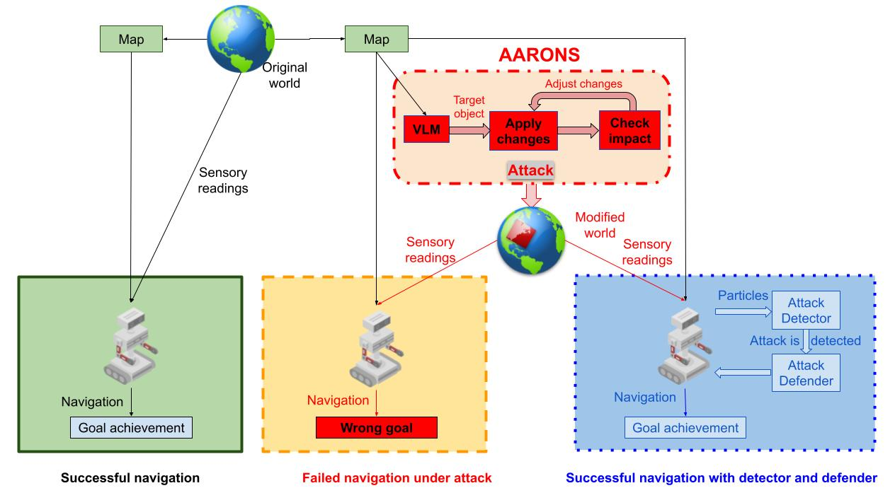

Paper ID: 7423
Mobile robots are becoming an integral part of everyday life. These systems typically rely on generating maps of the environment and using them for navigation. While significant progress has been made in improving the localization and navigation of mobile robots, their vulnerability to adversarial environment changes remains largely unexplored. This paper investigates the adversarial robustness of robot navigation systems and introduces attacks designed to manipulate the navigation environment with minimal modifications. Our proposed attack leverages vision-language models and pre-existing maps to identify objects whose repositioning could cause navigation errors. We also propose a defense mechanism to monitor the confidence of self-localization to detect changes in the environment and bypass attacked areas. Evaluations in simulated and real-world environments show that our attacks reduce the navigation success rate from 100% to 8.0% in the simulation and from 100% to 40.0% in the real world, while our defense mechanism increases the navigation success rate to 75.3% in simulation and 86.7% in the real world environment.

Overview of an attack that leads to navigation error of a mobile robot through modifying its working environment. The green solid-lined box shows a normal navigation scenario in which the robot successfully reaches its goal. The red dashed box illustrates the attack scenario, where environmental changes are introduced to disrupt the robot’s navigation. The blue box on the right highlights our defense mechanism that enables a robot under attack to recover and achieve its navigation goal.
Check out our real-world demo video below:
Attack:
Detection & Defense: